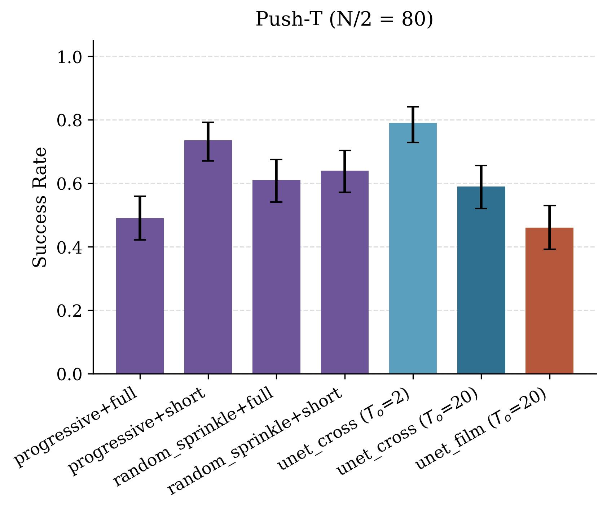
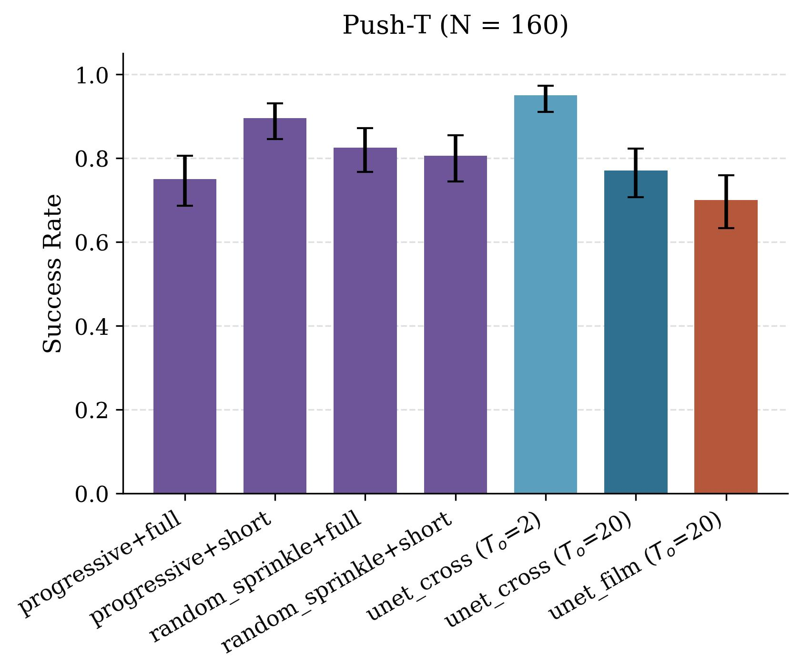
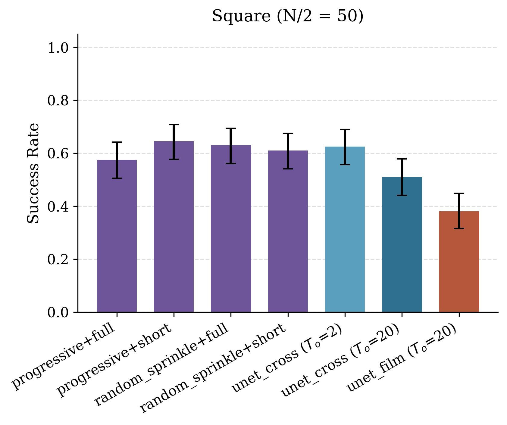
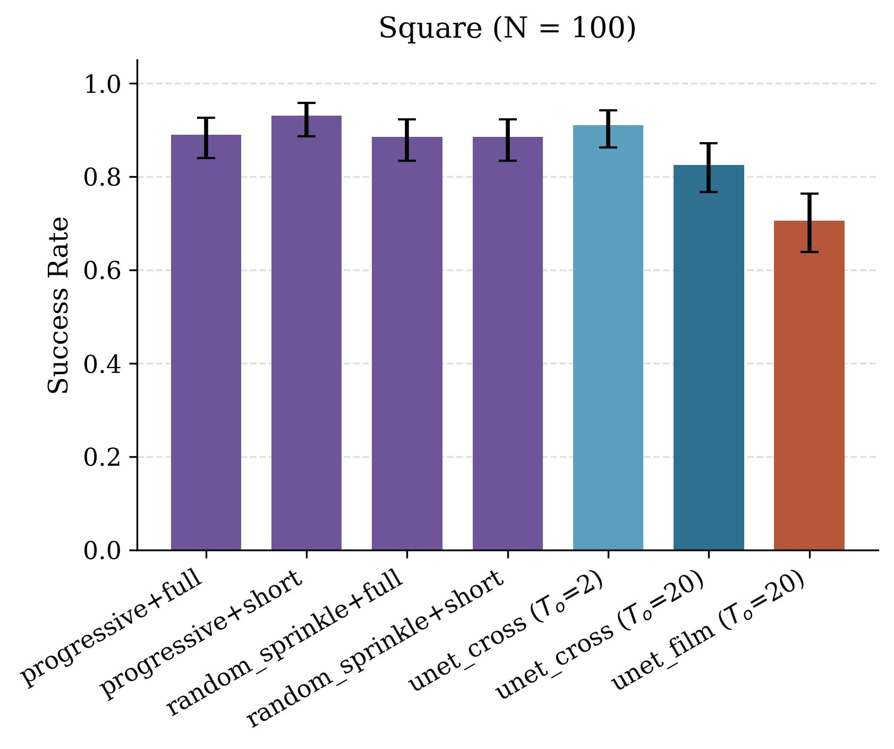
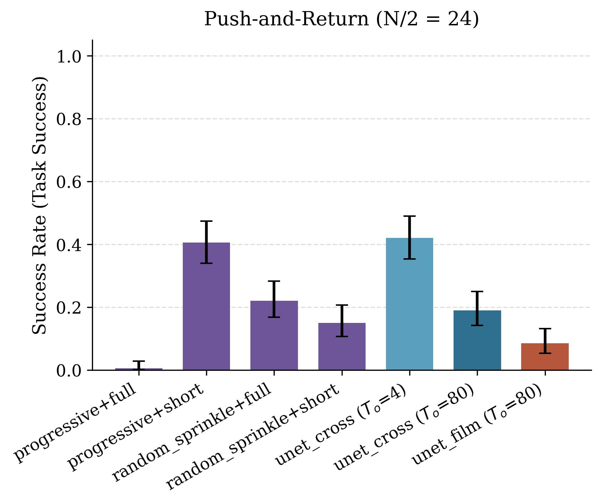
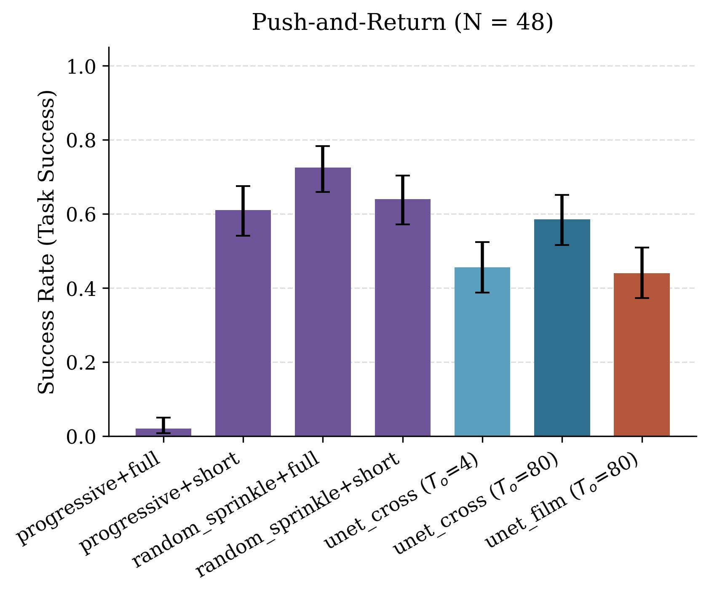
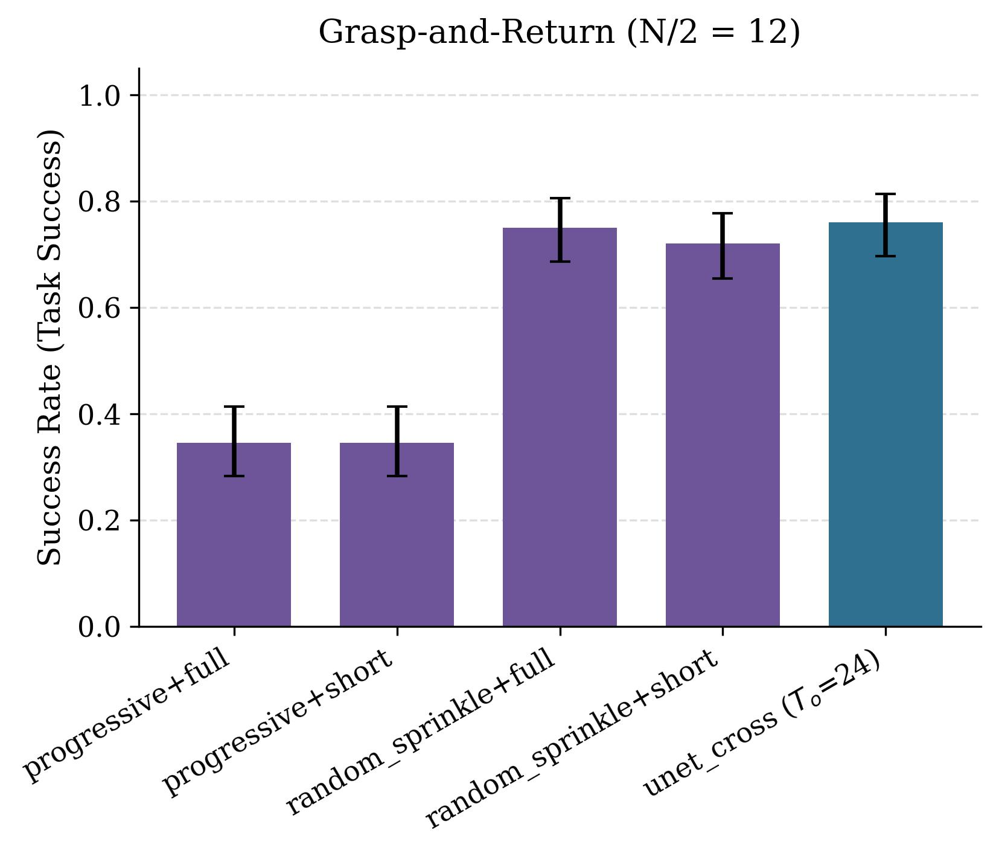
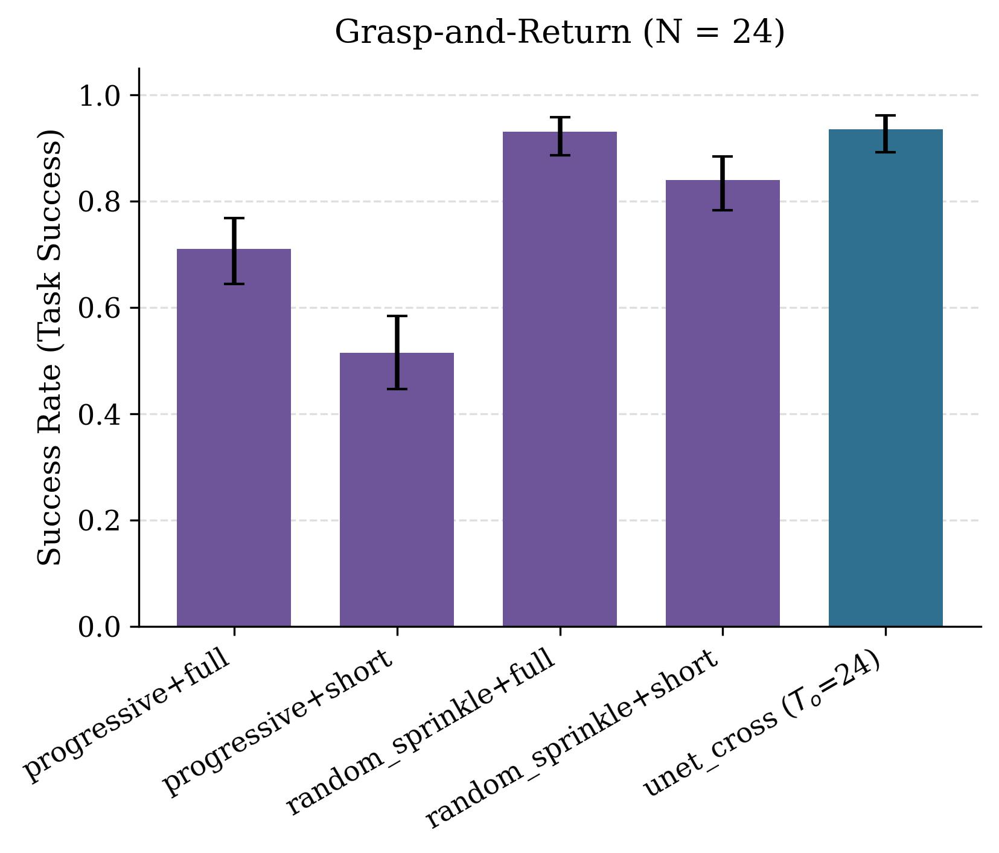

In the main paper we show significant improvements in the N/2 data regime, choosing progressive for ρi and short past action prediction horizon. In Figure 1, we show results for the N data regime as well as for other combinations.
We note that progressive+short shows performance gains in the three tasks in the N/2 data regime. With N trajectories, it shows improvement in push-T and square (where long-context policies still show scope for improvement), and maintains performance for push-and-return. Note that naively scaling context length showed a drop in performance in the N/2 regime for all these tasks. However, in the N data regime, we saw a drop only for push-T and square, but rather rising/maintained performance for push-and-return as context length was increased. While progressive+short maintains performance in the N data regime, random sprinkle+full shows improved performance.






We confirm this by investigating these methods on grasp-and-return, where even the N/2 data regime shows good performance with naive context length scaling. Intuitively, random sprinkle+full should be the best method. That is exactly what we notice in Figure 2, where in both N/2 and N data regimes, random sprinkle+full performs best.


Thus, we recommend using progressive+short when naive scaling performs worse compared to short context length, but random sprinkle+full when data is sufficient for naive history scaling.